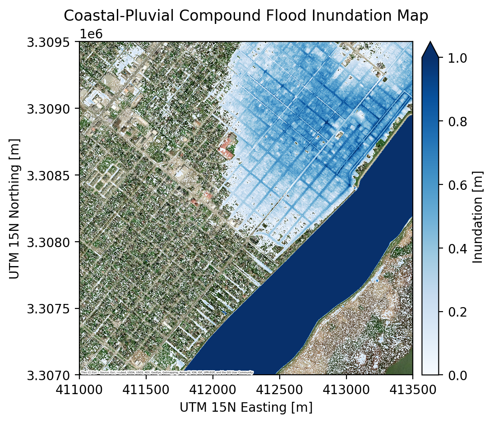

Coastal-pluvial compound flood inundation mapping example¶
This notebook demonstrates how to use pyGeoFlood to map coastal-pluvial compound flood inundation. The example focuses on a portion of the city of Port Arthur, Texas, USA. In this notebook we will:
Download a 1m DEM for the area of interest.
Use pyGeoFlood to separately calculate coastal and pluvial flood inundation for two hypothetical scenarios.
Coastal scenario: 1.2 m NAVD88 coastal water level.
Pluvial scenario: 20 cm of uniform rainfall.
Approximate compound inundation by merging the two maps.
We make a conservative assumption that compound inundation depth is the maximum of the coastal and pluvial depths.
Visualize the results.
 ¶
¶
Google Colab users: run the cell to below to install pyGeoFlood and its dependencies.¶
[1]:
try:
from google.colab import drive
print('intalling pyGeoFlood in Google Colab')
!pip install pygeoflood contextily
!git clone https://github.com/mdp0023/richdem.git
!cd richdem/wrappers/pyrichdem && pip install "setuptools<81" && pip install .
!pip install numpy==2.0.2 --force-reinstall
except ImportError:
print('see pyGeoFlood README for local installation instructions')
pass
see pyGeoFlood README for local installation instructions
Import libaries¶
[2]:
import contextily as cx
import numpy as np
import matplotlib.pyplot as plt
import rasterio
from mpl_toolkits.axes_grid1 import make_axes_locatable
from pathlib import Path
from pygeoflood import pyGeoFlood
from rasterio.plot import plotting_extent
Download the example DEM and instantiate the pyGeoFlood class.¶
Click here for more info about the DEM.
[ ]:
# download DEM, put in project directory
project_dir = Path("pa_pluv_coast")
project_dir.mkdir(exist_ok=True)
!curl https://utexas.box.com/shared/static/k2r7y204llmudeb5jc2xs2sz23rcx5s1.tif -Lso {project_dir}/pa_1m.tif
# pyGeoFlood automatically sets the project directory to the DEM directory
# a custom directory can also be set with pgf.project_dir = "path/to/project_dir"
pgf = pyGeoFlood(dem_path="pa_pluv_coast/pa_1m.tif")
Run Fill-Spill-Merge to create a pluvial flood inundation raster. We route a uniform depth of 0.2 m through the DEM’s depressions.¶
[4]:
pgf.fill_spill_merge(uniform_depth=0.2)
Running fill_spill_merge with parameters:
uniform_depth = 0.2
gridded_depth = None
custom_dem = None
overwrite_dephier = False
custom_path = None
Using saved dephier
/Users/markwang/micromamba/envs/pgf-test/lib/python3.12/site-packages/richdem/__init__.py:3: UserWarning: pkg_resources is deprecated as an API. See https://setuptools.pypa.io/en/latest/pkg_resources.html. The pkg_resources package is slated for removal as early as 2025-11-30. Refrain from using this package or pin to Setuptools<81.
import pkg_resources
running
ran
FSM inundation saved to pa_pluv_coast/pa_1m_fsm_inundation.tif
fill_spill_merge completed in 5.0895 seconds
Calculate coastal inundation. We apply a static ocean water level of 1.2 m NAVD88.¶
[ ]:
ocean_pixel = (412700, 3307700) # easting, northing of a pixel in the ocean in the DEM
pgf.c_hand(ocean_coords=ocean_pixel, gage_el=1.2)
Running c_hand with parameters:
ocean_coords = (412700, 3307700)
xy = True
gage_el = 1.2
custom_dem = None
custom_path = None
Coastal inundation raster written to pa_pluv_coast/pa_1m_coastal_inundation.tif
c_hand completed in 0.3554 seconds
Approximiate compound coastal-pluvial inundation by taking the maximum depth over both rasters¶
[6]:
# open pluvial and coastal inundation rasters
with rasterio.open(pgf.fsm_inundation_path) as src:
pluvial_inun = src.read(1)
pluvial_inun_profile = src.profile
with rasterio.open(pgf.coastal_inundation_path) as src:
coastal_inun = src.read(1)
coastal_inun_profile = src.profile
# data cleaning
pluvial_inun[pluvial_inun == pluvial_inun_profile['nodata']] = np.nan
pluvial_inun[pluvial_inun <= 0] = np.nan
coastal_inun[coastal_inun == coastal_inun_profile['nodata']] = np.nan
coastal_inun[coastal_inun <= 0] = np.nan
# compound inundation: here we take max of pluvial and coastal
compound_inun = np.fmax(pluvial_inun, coastal_inun)
# save compound inundation raster
with rasterio.open(project_dir / "compound_inundation.tif", "w", **pluvial_inun_profile) as dst:
dst.write(compound_inun, 1)
Visualize the coastal-pluvial compound inundation map¶
The map shows coastal and pluvial inundation for a hypothetical scenario over the northeastern portion of Port Arthur, as well as parts of the Sabine-Neches Canal and Pleasure Island.
[7]:
fig, ax = plt.subplots(dpi=200)
# show inundation map
im = ax.imshow(
compound_inun,
extent=plotting_extent(compound_inun, coastal_inun_profile["transform"]),
zorder=2,
interpolation="nearest",
resample=False,
vmax=1,
vmin=0,
cmap="Blues",
)
# add colorbar
divider = make_axes_locatable(ax)
cax = divider.append_axes("right", size="5%", pad=0.10)
fig.colorbar(im, cax=cax, label="Inundation [m]", extend="max")
# add basemap
cx.add_basemap(
ax,
crs=coastal_inun_profile["crs"],
source=cx.providers.Esri.WorldImagery,
zoom=16,
attribution_size=2,
zorder=1,
)
# add labels
ax.set(
title="Coastal-Pluvial Compound Flood Inundation Map",
xlabel="UTM 15N Easting [m]",
ylabel="UTM 15N Northing [m]",
)
plt.show()

To inspect the results in more detail, we can view the output rasters in a GIS software like QGIS. We print the output paths below.¶
[10]:
print(f"Coastal inundation raster: {pgf.coastal_inundation_path}")
print(f"Pluvial inundation raster: {pgf.fsm_inundation_path}")
print(f"Compound inundation raster: {project_dir / 'compound_inundation.tif'}")
Coastal inundation raster: pa_pluv_coast/pa_1m_coastal_inundation.tif
Pluvial inundation raster: pa_pluv_coast/pa_1m_fsm_inundation.tif
Compound inundation raster: pa_pluv_coast/compound_inundation.tif